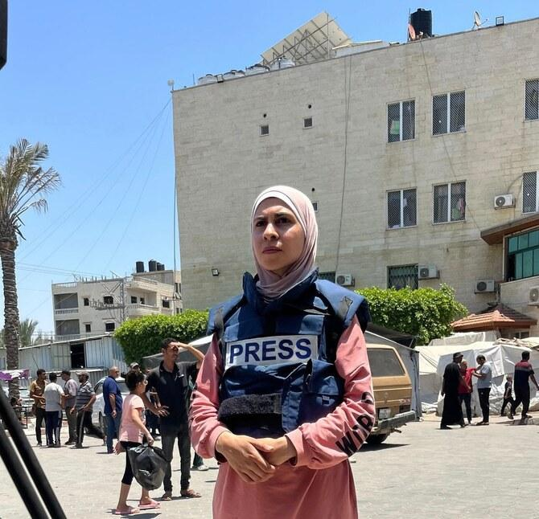
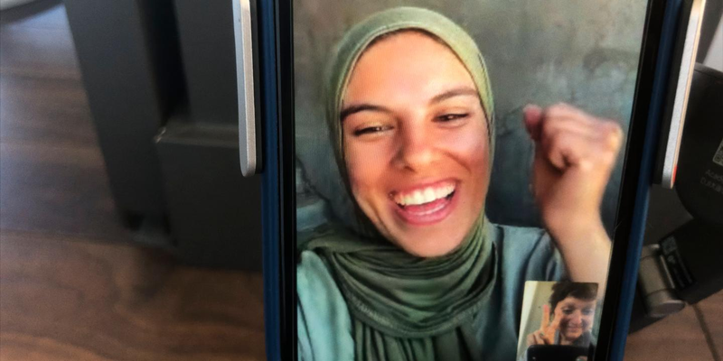

A Digital Exhibition
What happens when the voice for the dead becomes the dead?
01 / The People
Select a witness
Choose a journalist, follow their story and return to discover the others. Complete all five to unlock the final reflection.
The Collective Aftermath
Four journalists lost their lives. One survived detention and reported lasting harm. Each experienced an interruption to their ability to document the lives of others.
The Collective Aftermath
Archive/01
THE COLLECTIVE AFTERMATH
What can no longer continue?
Click to flip ↻Roshdi Sarraj helped international journalists report from Gaza through his work with Ain Media. His death removed an experienced local collaborator whose knowledge and relationships supported reporting beyond his own work.
Click to flip back ↻What remains accessible?
Click to flip ↻Fatma Hassona documented Palestinian culture and everyday life, while Saleh Al-Jafarawi shared firsthand experiences of conflict through social media. Their deaths ended their ability to continue contributing these distinctive perspectives.
Click to flip back ↻What may never be known?
Click to flip ↻Mariam Abu Dagga’s death interrupted her involvement in reporting on overcrowding at Nasser Hospital. Shadi Abu Sido’s detention prevented him from documenting events during his imprisonment, while reported lasting injuries affected his ability to return to journalism.
Click to flip back ↻Archive/02
THE COLLECTIVE AFTERMATH


Archive/03
THE COLLECTIVE AFTERMATH
We can identify the reporting that ended when journalists were killed or prevented from working.
But we cannot know every photograph that might have been taken, every interview that might have happened or every story that might have reached the world.
The absence of a journalist raises questions about how future events will be documented and whose experiences may receive less attention.
Some gaps cannot be measured. We cannot know every image that might have been taken or every conversation that might have been recorded.
Final reflection locked
Complete all five witness journeys to unlock this page. 5 remaining.
The cameras may fall silent, but the suffering they once documented does not.
Behind every unfinished report, every empty frame and every interrupted timeline are lives that continue beyond the absence of their witnesses.
Yet silence does not always mean that stories have disappeared. Some survive through photographs, testimonies and the voices of those who continue to bear witness.
But what of the stories that have yet to be told? The faces that have yet to be seen? The lives that may never become part of our collective memory?
When the witnesses are gone, who will ensure that the living are not forgotten?